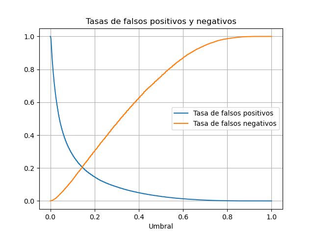
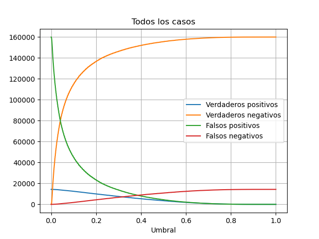
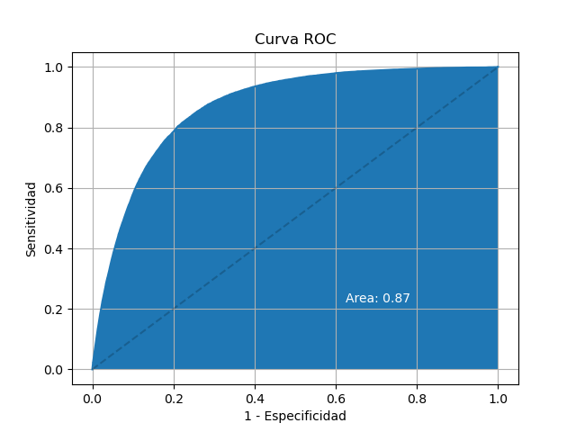

Probabilidad
0%
Calculadora
Sexo:
Otras comorbilidades:
Metodología
Lo que pretendo con este ejercicio es generar consciencia sobre el virus CoVid19 y el riesgo real de muerte que representa para muchas personas. Hay que tomarlo en serio y evitar lo más posible caer en el riesgo de contagiarse y contagiar a nuestros seres queridos. (Actualizado 19.03.2021)
La calculadora está basada en los datos oficiales del coronavirus en México. El algoritmo utilizado se llama regresión logística, y es un algoritmo comunmente utilizado en las ciencias médicas para estimar la probabilidad de que un paciente tenga cierta enfermedad, clasificándolo como enfermo o no enfermo. Se utilizó un conjunto de 812012 datos, de los que el 70% (568408) fueron usados para entrenamiento, y 30% (243604) para validar que el algoritmo es capaz de generalizar. Dado que los datos tienen un resultado binario, es decir, el paciente falleció o no falleció, el algoritmo necesita un umbral de decisión para aplicar sobre la probabilidad de muerte, a partir de la cual se entiende que el paciente murió. Debido a que la separación entre los dos conjuntos no es perfecta, es decir, existen pacientes que a pesar de tener baja probabilidad de muerte, mueren, y pacientes que con una alta probabilidad de fallecer sobreviven al virus, cualquier umbral de decisión dará lugar a cierto número de falsos positivos y falsos negativos. Por default el algoritmo utiliza un umbral de decisión del 50%, sin embargo, no es necesariamente el mejor valor. A continuación se explica el análisis ROC (Característica Operativa del Receptor, por sus siglas en inglés) realizado. El código puede ser revisado aquí.
La llamada curva ROC es una herramienta que nos permite medir el desempeño de un algoritmo de clasificación para distintos umbrales de decisión. El umbral de decisión sirve para, a partir de una probabilidad estimada, decidir en qué clasificación se encuentra el sujeto que está siendo evaluado. Abajo podemos ver en la primera gráfica, donde aparecen las tasas de falsos positivos y negativos, que para minimizar ambas tasas, el umbral de decisión correspondiente sería del 5.9%. Esto quiere decir que si la calculadora le asigna al paciente una probabilidad estimada de muerte del 6%, el algoritmo predice que ese paciente morirá por la enfermedad. Este número, dado que minimiza las tasas de falsos positivos y falsos negativos, maximiza la Sensibilidad y la Especificidad. Tener alta sensibilidad significa que es bueno clasificando a los pacientes que morirán por la enfermedad. Tener alta especifidad significa que de los que predice que morirán, acierta la mayor parte del tiempo, y entre mayor es el umbral de decisión, la especificidad también aumenta. El valor de 5.9% nos da un valor máximo para las dos, con 81% cada una, sin embargo, dado que los datos tienen una mortalidad del 5%, la gran mayoría de pacientes se recupera, por lo que el número de pacientes con predicción de muerte es significativamente más alto del valor real.

Para minimizar los números absolutos de falsos positivos y falsos negativos tenemos que observar la siguiente gráfica. Para ello se elige como umbral de decisión el punto donde se cruzan las curvas verde y roja, que corresponde al 26.9%. Este valor nos da una especificidad del 96.6%, lo que significa que los pacientes con predicción de muerte tienen una predicción significativamente más certera, sin embargo, la sensibilidad baja a un 35.5%, es decir, que un número significativo de los pacientes que el algoritmo predice que sobrevivirán, no lo logran en realidad. Volviendo a la primera gráfica, es importante notar que cuando la probabilidad estimada de muerte es del 40%, la especificidad llega al 98.7%, y para una probabilidad estimada del 60%, la especificidad alcanza el 99.5%, lo que significa que un paciente con predicción de muerte tiene muy pocas probabilidades de recuperarse.

Y bueno, ¿pero el modelo clasifica correctamente? Para saber qué tan bueno es un algoritmo separando pacientes entre estas 2 clases, se mide el área bajo la curva ROC. Una curva con un área de 1 significa que el algoritmo logra una separación perfecta, sin embargo en muy pocos casos es posible esto. Al otro extremo, un algoritmo que no logra separar en absoluto a los sujetos en 2 clasificaciones tiene un area de 0.5, es decir, que la curva es una línea inclinada a 45 grados. Como puede observarse en la gráfica de abajo, la curva se encuentra bastante por encima de la línea inclinada, marcada con una línea punteada, y tiene un área bajo la curva de 0.88. De acuerdo con Hosmer y Lemeshow (Applied Logistic Regression, p. 162), un valor entre 0.8 y 0.9 sugiere una capacidad "excelente" de discriminación, por lo que podemos considerar las predicciones de nuestro modelo como buenas.
